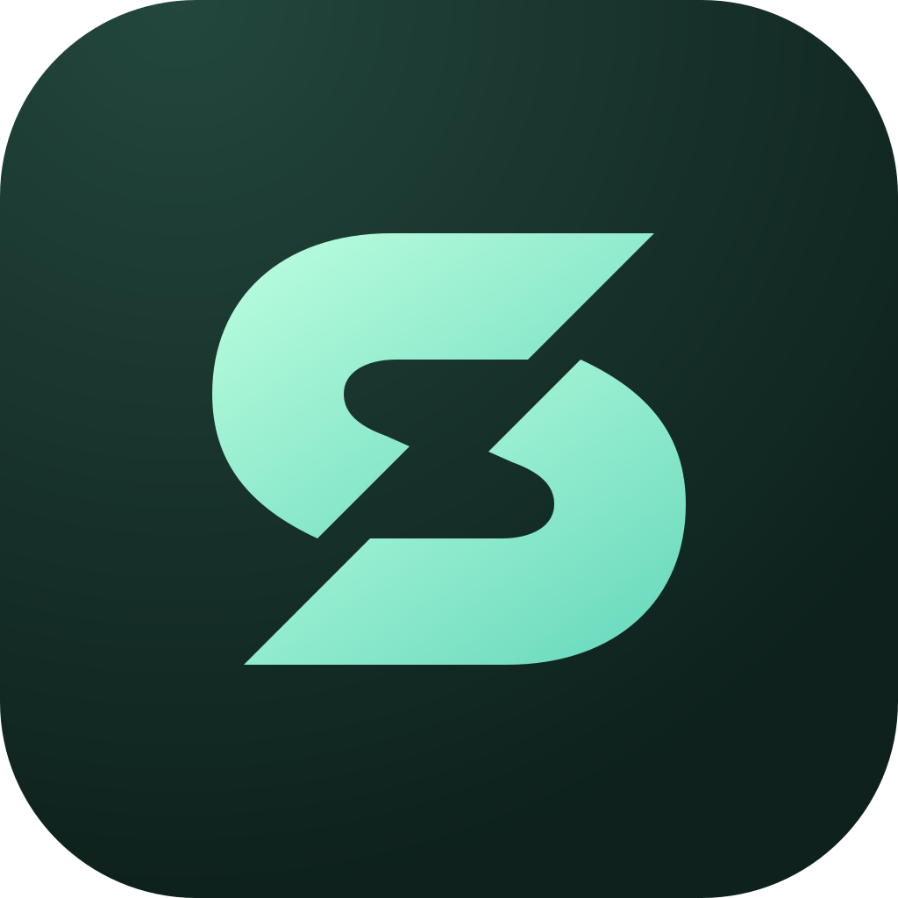
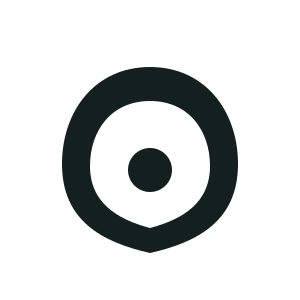

A folded S with an open diagonal. Interlocking forms suggest stability and systems working together.
SentinelHOMEOPS
02 / App presence

A restrained material treatment. The shape carries the identity.03 / Small-size study16 · 24 · 40 · 72 px One color. No effects required.04 / Evolution

→
From a soft enclosure to a sharper, more memorable silhouette.